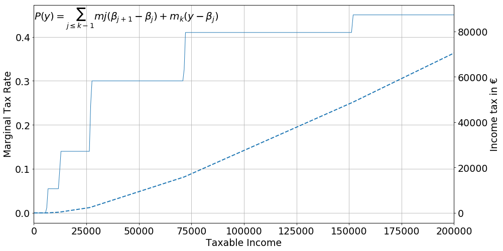

Rich Households Taxable Income and the Lowering of the Family
Quotient Ceiling:
A French natural experiment.
Adrien Pacifico
AMSE, THEMA
## Roadmap:
1. Literature review
2. Institutional Background
3. The Tax Reform in Detail
4. Empirical Approcach
5. Results
6. Conclusion
### Today's topic:
We want to see how __rich French married couples__ (with children) reacted on the taxable income margin to a recent fiscal reform.
### Why is it important?
1.
* Income tax is an important redistributive instrument.
* Behavioral reactions of households are crucial for the Equity-Efficiency Tradeoff ( [Mirlees(1971)](), [Saez(2001)]()).
2. The 9 th decile of the income distribution account for most of the aggregated income tax.
### What do we know?
A very large literature exists, and can be splitted in two (closed) fields of research.
* The Labor economics literature [(Blundel & al (1999), Keane(2011))]( fdsqf)
* The Elasticity of Taxable Income literature [(Saez & al (2012))]( dfq)
### These two literatures find very similar results:
1. Behavioral reactions are very small.
2. Married women reacts, mostly on the extensive margin.
3. While substitution effects are small, income effects are neglictable.
### Institutional Background
The reform we are going to look at is a lowering of a ceiling that determines the maximum per child tax-deduction.
It happened twice in 2012 and 2013. The per child maximum tax-break has been shifted from 2336 € to 2000 and then to 1500 €.
Timing:
- March 2011: François Hollande has declared himself as a candidate to the French presidency.
- October 2011: François Hollande won the left primary.
- January 2012: He conveys the idea of the reform in unprecised manner.
- May 2012: François Hollande won against former president Nicolas Sarkory with 51.62% of the votes
- September 2012: the lowering from 2336 euros to 2000 euros is annonced.
- December 2012: the law is passed and applied to 2012 incomes. Households discover their "new" tax in January or May 2013.
- September 2013: new lowering to 1500 € (voted in december) and applied to 2013 incomes, Households discover their "new" tax in January or May 2014.
Reaction:
- Jan-Dec 2011: During year 2011, it was hard to plan the reform
\(\implies \) No behavioral reaction in 2011.
- Jan-Dec 2014: The reform impacted households fully on their 2013 income
\(\implies \) They can fully react in 2014.
## The Family Quotient Ceiling
The Piecewise Linear Tax Scheme:
A piecewise linear tax scheme is a serie of tax brackets with their associated a tax rates.

|
2011 |
|
Rate |
Threshold |
| 0 |
0 |
0 |
| 1 |
0.055 |
5,963 |
| 2 |
0.14 |
11,896 |
| 3 |
0.3 |
26,420 |
| 4 |
0.41 |
70,830 |
The family quotient
It consist of dividing the tax base by a given amount of fiscal shares in order to apply it to the piecewise linear tax scheme:
$$
T(y, \text{fiscal shares}) = \mathcal{P} \left( \frac{
\sum_{i} y_i}
{ \text{fiscal shares}} \right) \times \text{fiscal shares}
$$
The number of additional fiscal share per child is 0.5 share for the two first children, and 1 share for following children.
However there exist a ceiling limiting the fiscal gain per half fiscal share to 2336 €.
However there exist a ceiling limiting the fiscal gain per half fiscal share to 2336 €, and has been lowered to 1500 € in 2013.
It implies a series of thresholds given the number of children at which the MTR changes or at which households will face a lump sum decrease of their disposable income.
|
2011 |
2013 |
| Children # |
|
|
| 1 |
63158 |
58388 |
| 2 |
73615 |
63426 |
| 3 |
94419 |
73874 |
| 4 |
115287 |
84178 |
| 5 |
136064 |
94509 |
| 6 |
150656 |
104633 |
No other tax reforms or policy happened on the \(\text{50 000}\) €, \(\text{200 000}\) € over the 2012-2014 period.
To the exception of:
- The suppression of a unique tax transfer on capital.
- A change in the retirement age to get a full pension .
Figures has been generated with Openfisca, a more compleate description of the reform will be (soon) put on www.github.io/adrienpacifico/qf_lowering in a auto-executable Jupyter notebook format.
The analysis of behavioral reactions with respect to net of tax wage changes face an identification issue:
* A change in marginal tax rate (MTR), happens on a specific part of the income distribution.
* As a consequence it is not possible to disentengle the impact of a change in the income distribution, and a behavioral reaction to a change in net-of-tax income.
As noted by Piketty (1999) the family quotient adds an other source of variation that allows to control for the change in the income distribution.
The family quotient embodies a triple-difference estimator.
Even if that additionnal source of variation as been used implicitely (or explicitely) by numerous French studies (Carbonier (2014), Lehman et al (2014), Sicsic (2018)), no recent studies has used it with a triple-difference setting.
The reform creates three separate groups:
* An untreated one that is below the two thresholds.
* One that face a change in MTR (Treatment 1).
* One that face a lump sum decrease in disposable income (Treatment 2).
We make the assumption that in the absence of reform, households would have stayed in the same position in the income distribution.
#### The Échantillon Démographique Permanent:
* Large dataset composed of 62 databases.
* Over 2 millions households in panel, with fiscal returns.
* Large set of controls.
$$~$$
##### What I Do:
* Use the taxable income in 2011 and 2014.
* On married households with and without children.
* Taxable income between 50 to 200k € in 2011 or in 2014.
Classical diff-in-diff:
$$ y_{it} = \beta_0 + \beta_1 \text{Post} + \beta_2 \text{Treated} \\ + \delta \text{Treated} \times \text{Post} + c_i + \epsilon_{it} $$
Which can be estimated in first difference:
$$ \Delta y_{i} = \beta_1+ \delta_1 \text{Treated} + \epsilon_{i}$$
In our case we can do:
$$ \Delta y_{i} = \beta_0+ \beta_1 \text{Treatment}_1 +\beta_2 \text{Treatment}_2 + \epsilon_{i}$$
| Intercept |
Treatment 1 |
Treatment 2 |
5315***
(37) |
-218**
(105) |
-823***
(81) |
|
|
|
That estimation doesn't take into account potentiel changes due the change in the income distribution.
It also does not take into account potentiel difference in trend based on family composition.
A triple-difference estimator:
$$\begin{align*}
\Delta y_i &= \beta_0 + \sum_{i=1}^{6} {\beta_i \text{Children}_i} + \sum_{j=1}^{6} {{}_{b}\delta_i \text{Between}_i} + \sum_{i=1}^{6} {{}_{o}\delta_i \text{Over}_j} \\
&+ \sum_{i=1}^6 {{}_{b}\gamma_{i} \text{Children}_i \times \text{Between}_i} \\
&+ \sum_{i=1}^6 {{}_{o}\gamma_{i} \text{Children}_i \times \text{Over}_i} \\
& + \epsilon_i
\end{align*}$$
How well the reform is fitted by the estimation ?
$$\begin{align*}
\Delta T =& \sum_{i = 1}^{6} \beta^{O}_{i} child_i \times Over_i + \sum_{i=1}^{6} \beta^{MTR_O}_i \Delta y \times child_i \times Over_i \\
&+ \sum_{i=1}^{6} \beta^{MTR_B}_i \Delta y \times child_i \times Between_i \\
&+ \gamma \Delta y \times \text{ Not touched by reform} \\
&+ \theta \times \text{Not touched by reform} + \epsilon_i
\end{align*} $$
How well the reform is fitted by the estimation ?
 * A study on top 10% households without the top 1%.
* First study to use the EDP for tax related purposes.
* Relates on a unique natural experiment that allows to capture the income effect.
* A (new) approach that allows to be structurally free of the change in distribution bias.
* I find large income effect, most likely due to households that wants to keep up with their standars of living.
* The income effect usually dominate the substitution effect, but the substitution effect become more important for larger income.
* Women tend to react less than men.
* Economics is usually non reproducible [Chang & Li (2015)](https://www.federalreserve.gov/econresdata/feds/2015/files/2015083pap.pdf) .
* Tax reform analysis is very sensible to data selection [kopczuk (2005)](http://www.columbia.edu/~wk2110/bin/taxBase.pdf).
* Availability of code (data preparation and estimation) is not good.
* Administrative data leads to a very high (fixed) reproducibility cost.
* One solution is to publish all the code, with as much non identifying output as possible, that allows to see exactly what has been done to attain such results.
* A study on top 10% households without the top 1%.
* First study to use the EDP for tax related purposes.
* Relates on a unique natural experiment that allows to capture the income effect.
* A (new) approach that allows to be structurally free of the change in distribution bias.
* I find large income effect, most likely due to households that wants to keep up with their standars of living.
* The income effect usually dominate the substitution effect, but the substitution effect become more important for larger income.
* Women tend to react less than men.
* Economics is usually non reproducible [Chang & Li (2015)](https://www.federalreserve.gov/econresdata/feds/2015/files/2015083pap.pdf) .
* Tax reform analysis is very sensible to data selection [kopczuk (2005)](http://www.columbia.edu/~wk2110/bin/taxBase.pdf).
* Availability of code (data preparation and estimation) is not good.
* Administrative data leads to a very high (fixed) reproducibility cost.
* One solution is to publish all the code, with as much non identifying output as possible, that allows to see exactly what has been done to attain such results.